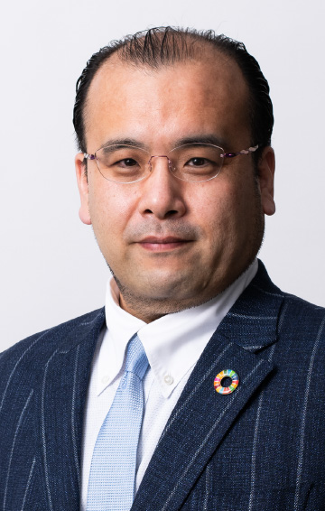

8.24（木）14：45～15：15
VUCA時代の人財改革 ～デジタル・AIを使いこなす変革力とは
B＆DX代表取締役社長
安部 慶喜 氏
ChatGPTなど日々生まれる新たな技術を、自社の価値向上の武器としてどのように取り入れていくかが問われている。デジタル技術の活用を外部の専門家に頼るだけではこれからの時代の変化についていけなくなるだろう。ではどうするべきか？人的資本経営の観点からも注目される『人財改革』について、事例を交えて解説する。